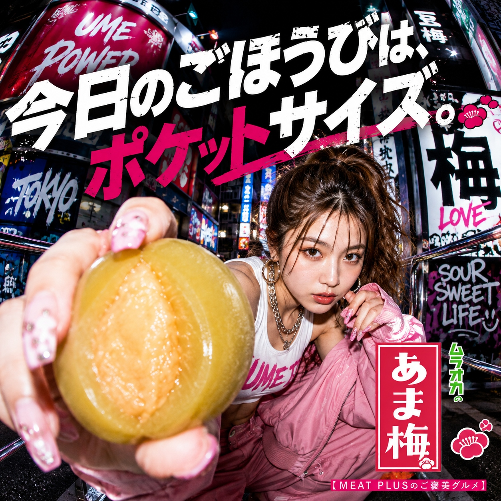
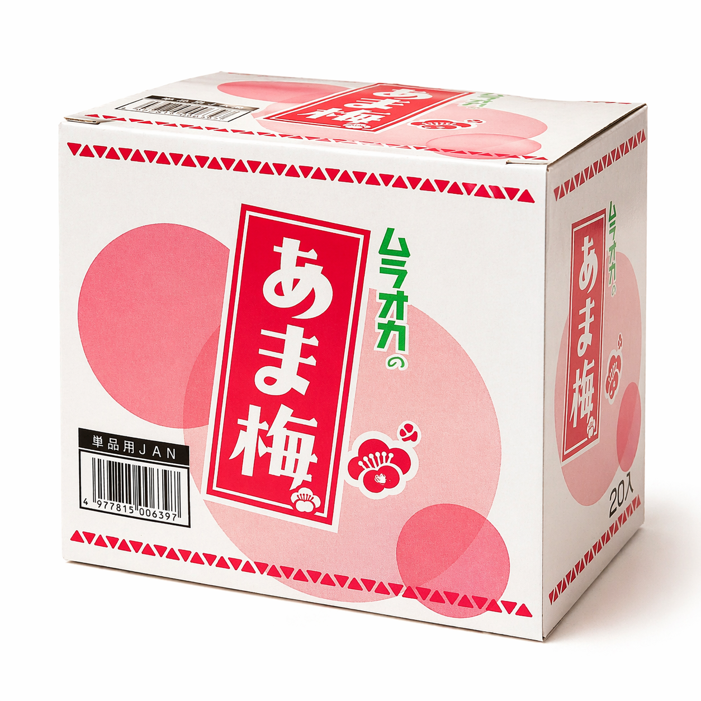
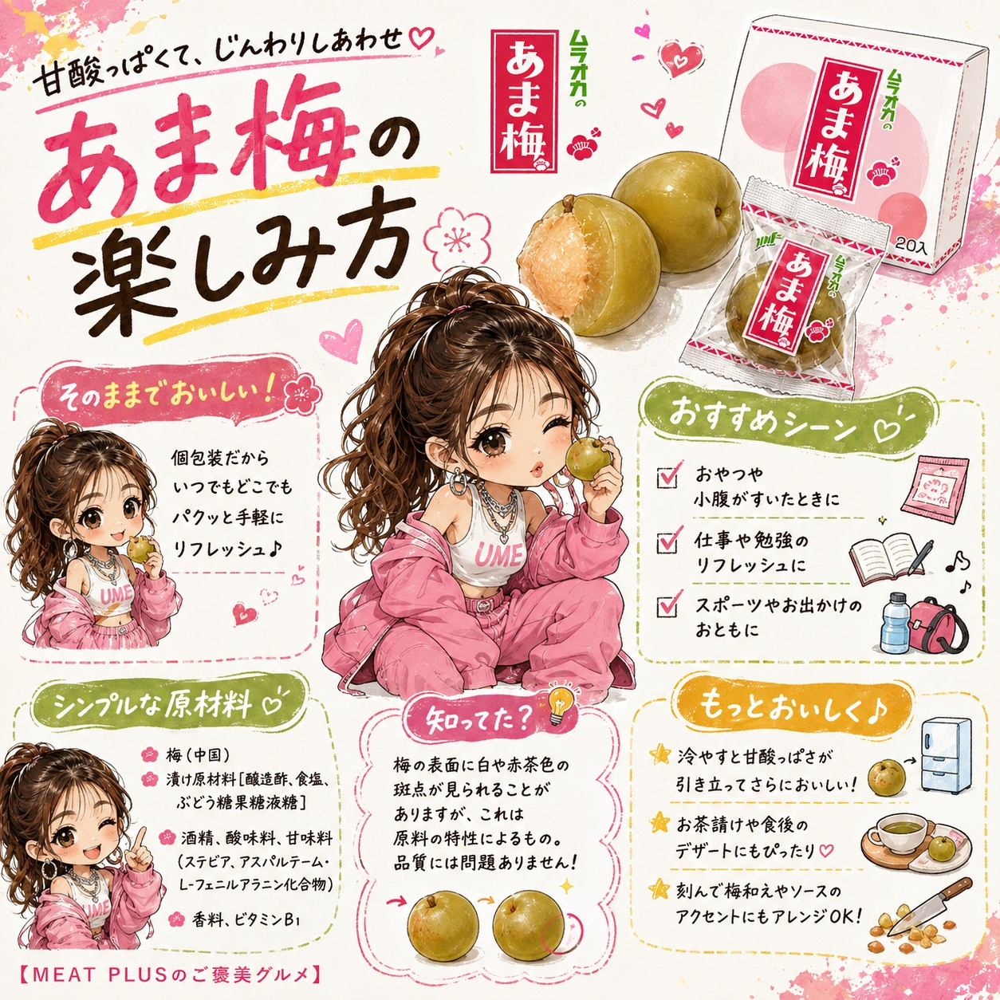
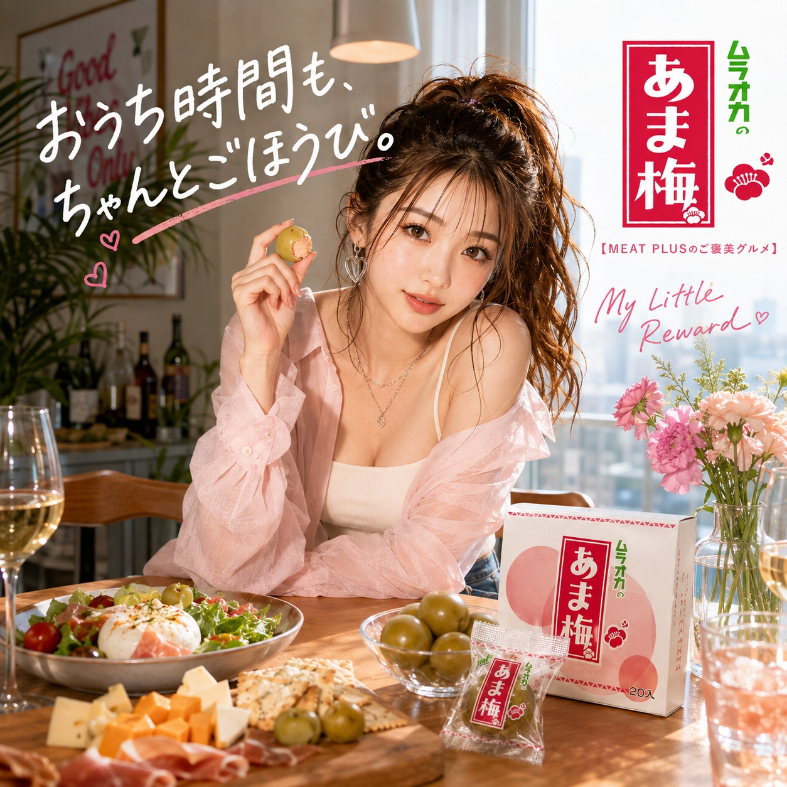

SCENE 01

k スイーツ・菓子
【カリッと甘酸っぱい、懐かしい味。いつでも手軽にリフレッシュ。】
小腹が空いた時、仕事や勉強の合間の気分転換に、つい手が伸びる。そんな懐かしくて新しいおやつがここにあります。『ムラオカのあま梅』は、カリッとした心地よい歯ごたえと、口いっぱいに広がる甘酸っぱさが絶妙なバランス。一粒食べれば、その爽やかな風味で気分もリフレッシュできます。一粒ずつ個包装になっているので、手を汚さずに食べられ、持ち運びにも便利です。バッグにいくつか忍ばせておけば、外出先やドライブのお供にもぴったり。常温で保存できるので、ご家庭やオフィスの常備おやつとしても最適です。緑茶やほうじ茶と合わせれば、ほっと一息つけるお茶請けに。お子様から大人まで、世代を問わず愛される昔ながらの味わいをお楽しみください。毎日のちょっとした楽しみに、『ムラオカのあま梅』をぜひどうぞ。カリッとした一粒が、あなたの日常に小さな幸せをお届けします。
公式サイトへ移動します。価格・在庫・配送条件は移動先で最終確認してください。



PRODUCT INFORMATION
梅（中国）、漬け原材料［醸造酢、食塩、ぶどう糖果糖液糖］／酒精、酸味料、甘味料（ステビア、アスパルテーム・L-フェニルアラニン化合物）、香料、ビタミンB1
FAQ
甘めの味付けで酸味もまろやかなので、多くのお子様にもお楽しみいただけます。ただし、種がありますので、小さなお子様がお召し上がりの際は、喉に詰まらせないよう保護者の方がご注意ください。
原材料の梅は中国産のものを使用しております。品質管理の行き届いた日本の工場で、丁寧に加工・製造しておりますので、安心してお召し上がりください。
MEAT PLUS OFFICIAL SHOP
仕入れ・加工・梱包・発送まで自社で行うMEAT PLUSの公式オンラインショップでご注文いただけます。
公式オンラインショップで購入する